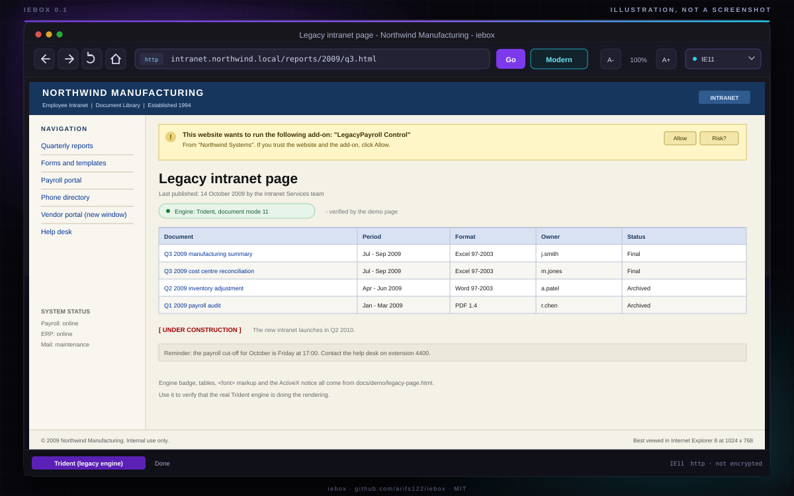

Windows 10/11 · free and open source
The old web,
in a window.
iebox hosts the real Microsoft Trident engine — the one inside Internet Explorer 11 — in a small standalone window with a modern toolbar. For the intranet portal, the vendor admin panel and the camera NVR whose live view only works in IE.
npx iebox http://192.168.1.64/ # or: iebox build && iebox export C:\iebox-camera --url ...
Illustration of the real layout — this project is a native Windows app, so there is no browser demo.
Real engine, not a mock
MSHTML/Trident through the WinForms WebBrowser control, with an IE11/IE10/IE9/IE8/IE7 emulation switch.
32-bit by default
Most camera and NVR ActiveX controls are x86 only. The host is compiled for x86 unless you ask otherwise.
No Node on the target PC
iebox export writes a folder with the compiled exe, a double-click launcher and the ActiveX steps.
Not affiliated with IE Tab / Blackfish Software or Microsoft. README Security MIT